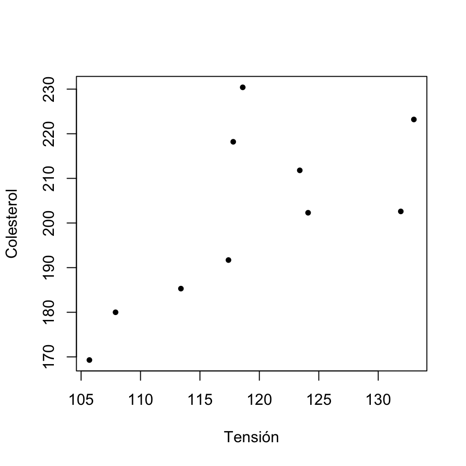

Lección 4 Descripción de datos cuantitativos
Los datos cuantitativos son los que expresan cantidades que se representan mediante números, tales como los resultados de contar objetos o individuos o de medir pesos, distancias, tiempos o concentraciones.
4.1 Frecuencias
Como los números reales están ordenados de manera natural, para estudiar una muestra de datos cuantitativos (una variable cuantitativa) podemos usar las frecuencias y las frecuencias acumuladas de sus diferentes valores, como en las variables ordinales. Esto realmente solo es útil cuando en la muestra tenemos pocos valores diferentes.
| Sexo | Demencia Senil | Cáncer de mama | COVID-19 | Número de hijos | |
|---|---|---|---|---|---|
| 1 | Mujer | No | No | Leve | 4 |
| 2 | Mujer | Alzheimer | Sí | Leve | 1 |
| 3 | Hombre | Alzheimer | No | UCI | 8 |
| 4 | Mujer | Otros | No | Asintomática | 0 |
| 5 | Mujer | Alzheimer | No | Leve | 3 |
| 6 | Mujer | Otros | Sí | Hospitalización | 4 |
| 7 | Mujer | No | No | UCI | 2 |
| 8 | Mujer | Alzheimer | No | Leve | 1 |
| 9 | Hombre | Otros | No | Leve | 1 |
| 10 | Mujer | Otros | Sí | Leve | 2 |
| 11 | Hombre | Alzheimer | No | Leve | 6 |
| 12 | Hombre | Alzheimer | No | Hospitalización | 0 |
| 13 | Mujer | No | No | Leve | 0 |
| 14 | Mujer | No | No | Asintomática | 1 |
| 15 | Hombre | Alzheimer | No | Leve | 4 |
| 16 | Mujer | No | Sí | Asintomática | 2 |
| 17 | Mujer | No | No | Leve | 0 |
| 18 | Mujer | No | No | Hospitalización | 3 |
| 19 | Mujer | Alzheimer | No | Hospitalización | 6 |
| 20 | Hombre | No | No | Leve | 3 |
La tabla siguiente agrupa las diferentes tablas de frecuencias (absolutas y relativas, acumuladas o no) de los números de hijos de estos residentes:
| Número de hijos | Frec. absoluta | Frec. relativa | Frec. abs. acumulada | Frec. rel. acumulada |
|---|---|---|---|---|
| 0 | 4 | 0.20 | 4 | 0.20 |
| 1 | 4 | 0.20 | 8 | 0.40 |
| 2 | 3 | 0.15 | 11 | 0.55 |
| 3 | 3 | 0.15 | 14 | 0.70 |
| 4 | 3 | 0.15 | 17 | 0.85 |
| 6 | 2 | 0.10 | 19 | 0.95 |
| 8 | 1 | 0.05 | 20 | 1.00 |
Y a modo de ejemplo, el diagrama de barras de frecuencias relativas de estos números de hijos es:
4.2 Medidas de tendencia central
Como los datos cuantitativos son números reales y tienen el significado de números reales, podemos operar con ellos. Esto nos aporta una multitud de estadísticos, expresiones matemáticas que, aplicadas a un vector de datos cuantitativos, producen un valor que expresa alguna característica del mismo.
Supongamos de ahora en adelante que tenemos una muestra formada por \(n\) números, que denotaremos \(x_1,\ldots,x_n\).
En primer lugar tenemos los estadísticos de tendencia central, que dan un valor representativo del conjunto de datos de la variable; los más importantes son:
La moda, que es el valor, o los valores, de máxima frecuencia (absoluta o relativa, tanto da). Normalmente, solo se usa para variables discretas.
La media aritmética: \[ \overline{x}=\frac{x_1+\cdots+x_n}{n} \]
En este curso, cuando hablemos de la media de unos datos nos referiremos siempre a su media aritmética. Hay otros tipos de media, como por ejemplo la media geométrica o la armónica, que no estudiaremos.
La mediana \(Q_{0.5}\), que representa el valor central en la lista ordenada de observaciones. Se define de la manera siguiente. Si denotamos por \[ x_{(1)}\leqslant x_{(2)}\leqslant \cdots \leqslant x_{(n)} \] los datos de la variable cuantitativa ordenados de menor a mayor:
Si \(n\) es impar, su mediana es el dato central: \(x_{(n+1)/2}\).
Por ejemplo, si una muestra está formada por 7 números, su mediana es el cuarto tras ordenarlos de menor a mayor.
Si \(n\) es par, su mediana es la media de los dos datos centrales: \[ \frac{x_{(n/2)}+x_{(n/2+1)}}{2}. \]
Por ejemplo, si una muestra está formada por 8 números, su mediana es la media del cuarto y el quinto tras ordenarlos de menor a mayor.
Ejemplo 4.2 Tomemos la variable “Hijos” de la Tabla 4.1, formada por los números
4, 1, 8, 0, 3, 4, 2, 1, 1, 2, 6, 0, 0, 1, 4, 2, 0, 3, 6, 3
En su tabla de frecuencias vemos que la moda son los valores 0 y 1, que empatan en la frecuencia máxima.
Su media es \[ \frac{4+1+8+0+3+\cdots+0+3+6+3}{20}=2.55 \]
Para calcular su mediana, lo primero que hacemos es ordenar de menor a mayor las observaciones, y marcamos su posición dentro del conjunto ordenado:
| Posición | 1 | 2 | 3 | 4 | 5 | 6 | 7 | 8 | 9 | 10 | 11 | 12 | 13 | 14 | 15 | 16 | 17 | 18 | 19 | 20 |
| Valor | 0 | 0 | 0 | 0 | 1 | 1 | 1 | 1 | 2 | 2 | 2 | 3 | 3 | 3 | 4 | 4 | 4 | 6 | 6 | 8 |
Como tenemos 20 datos, la mediana será la media aritmética de sus dos valores centrales, los de las posiciones 10 y 11: \(Q_{0.5}=(2+2)/2=2\).
Ejemplo 4.3 ¿Qué les pasa a estos estadísticos si eliminamos el paciente con 8 hijos de la muestra? Los datos son ahora
4, 1, 0, 3, 4, 2, 1, 1, 2, 6, 0, 0, 1, 4, 2, 0, 3, 6, 3
La moda siguen siendo los valores 0 y 1, ya que no hemos modificado sus frecuencias y hemos eliminado observaciones
Su media ahora es \[ \frac{4+1+0+3+\cdots+0+3+6+3}{19}=2.263 \]
Como ahora tenemos 19 observaciones, su mediana será la observación central, es decir, la décima tras ordenarlas de menor a mayor:
| Posición | 1 | 2 | 3 | 4 | 5 | 6 | 7 | 8 | 9 | 10 | 11 | 12 | 13 | 14 | 15 | 16 | 17 | 18 | 19 |
| Valor | 0 | 0 | 0 | 0 | 1 | 1 | 1 | 1 | 2 | 2 | 2 | 3 | 3 | 3 | 4 | 4 | 4 | 6 | 6 |
Por lo tanto, \(Q_{0.5}=2\).
Ejemplo 4.4 ¿Y qué les pasaría a estos estadísticos si, en la muestra original, hubiéramos cometido un error y al último paciente le hubiéramos anotado 300 hijos en lugar de 3? Los datos así serían:
4, 1, 8, 0, 3, 4, 2, 1, 1, 2, 6, 0, 0, 1, 4, 2, 0, 3, 6, 300
La moda no cambia
La media ahora sería \[ \frac{4+1+8+0+3+\cdots+0+3+6+300}{20}=17.4 \]
Como volvemos a tener 20 números, la mediana sería otra vez la media de las observaciones décima y undécima tras ordenarlas de menor a mayor:
Posición
1
2
3
4
5
6
7
8
9
10
11
12
13
14
15
16
17
18
19
20
Valor
0
0
0
0
1
1
1
1
2
2
2
3
3
4
4
4
6
6
8
300
De nuevo, \(Q_{0.5}=(2+2)/2=2\).
Figura 4.1: Moda, mediana y media (Stephen K. Campbell: Flaws and Fallacies in Statistical Thinking)
Es importante observar que, como ilustran estos ejemplos y el chiste de S. K. Campbell:
La moda es el valor más repetido, pero puede ser poco representativa
La media es poco robusta, en el sentido de que los valores extremos pueden afectarla mucho
La mediana es muy robusta, en el sentido de que los valores extremos la afectan poco
Por este motivo, por ejemplo, a la hora de resumir los salarios españoles, se publican los tres valores:
Figura 4.2: Gráfico publicado por el INE (https://www.ine.es/prensa/eces_2018_a.pdf)
Es interesante copiar un trozo de la nota de prensa de la que hemos extraído el gráfico de la Figura 4.2, donde se comenta la relación entre la moda, la media y la mediana:
“El salario bruto medio anual en España fue de 24.009,12 euros por trabajador en el año 2018, un 1,5% mayor al año anterior. La diferencia entre este salario medio y el salario más frecuente o modal (de 18.468,93 euros) fue de más de 5.500 euros. Esto significa que había pocos trabajadores con salarios muy altos pero que influyeron notablemente en el salario medio.
“Por otra parte, el salario mediano (que divide al número de trabajadores en dos partes iguales, los que tienen un salario superior y los que tienen un salario inferior) presentó un valor de 20.078,44 euros en 2018.”
4.3 Medidas de posición
Las medidas de posición dividen la variable en unas determinadas proporciones; estos valores reciben el nombre de cuantiles. En este sentido, la mediana es también una medida de posición, puesto que divide la variable en dos mitades.
Dada una proporción \(0<p<1\), el cuantil de orden \(p\), o \(p\)-cuantil, de una variable cuantitativa, que denotaremos por \(Q_p\), es el valor más pequeño tal que su frecuencia relativa acumulada es mayor o igual que \(p\). En otras palabras, si tenemos un conjunto de números \(x_1, \ldots, x_n\) y los ordenamos de menor a mayor, \[ x_{(1)}\leqslant x_{(2)}\leqslant \cdots \leqslant x_{(n)}, \] entonces \(Q_p\) es el primer valor \(x_{(i)}\) de esta lista ordenada que deja a su izquierda (incluyéndolo a él) como mínimo la fracción \(p\) de los datos, es decir, \(p\cdot n\) datos.
| Posición | 1 | 2 | 3 | 4 | 5 | 6 | 7 | 8 | 9 | 10 | 11 | 12 | 13 | 14 | 15 | 16 | 17 | 18 | 19 | 20 |
| Valor | 0 | 0 | 0 | 0 | 1 | 1 | 1 | 1 | 2 | 2 | 2 | 3 | 3 | 3 | 4 | 4 | 4 | 6 | 6 | 8 |
Entonces:
El 0.2-cuantil, \(Q_{0.2}\), es el primer elemento en esta lista ordenada que es mayor o igual que el 20% de los datos. Como el 20% de 20 es 4, \(Q_{0.2}\) es el cuarto elemento de la lista ordenada: 0.
El 0.75-cuantil, \(Q_{0.75}\), es el primer elemento en esta lista ordenada que es mayor o igual que el 75% de los datos. Como el 75% de 20 es 15, \(Q_{0.75}\) es el decimoquinto elemento de la lista ordenada: 4.
El cuantil de orden 1/3, \(Q_{1/3}\), es el primer elemento en esta lista ordenada que es mayor o igual que un tercio de los datos. Como un tercio de 20 es 6.66 y pico, \(Q_{1/3}\) es el séptimo elemento de la lista ordenada: 1. Fijaos en que 6/20=0.3, y por lo tanto el sexto elemento de la lista deja a su izquierda solo el 30% de la muestra, no un tercio. Necesitamos el séptimo elemento para llegar al tercio, aunque entonces nos pasemos.
En realidad, la definición que hemos dado de cuantil es “orientativa”: no hay una regla única para calcular cuantiles de una muestra (salvo la mediana), y se han propuesto varios métodos que pueden dar resultados diferentes; podéis consultar nueve de estos métodos en la entrada sobre cuantiles de la Wikipedia en inglés. La razón de esta diversidad es que el objetivo final del cálculo de un cuantil puede no ser solo dar el primer valor cuya frecuencia relativa acumulada en el conjunto de datos llegue a \(p\), sino también estimar qué vale este valor para el total de la población.
¿Qué os recomendamos? No os compliquéis la vida:
- Si calculáis cuantiles a mano, usad la definición que hemos dado
- Si los calculáis con algún paquete estadístico, usad su método por defecto (que seguramente no sea el que hemos explicado)
Algunos cuantiles con nombre propio:
La mediana es el cuantil \(Q_{0.5}\).
Los cuartiles son los cuantiles \(Q_{0.25}\), \(Q_{0.5}\) y \(Q_{0.75}\), y reciben, respectivamente, los nombres de primer cuartil, segundo cuartil (o mediana) y tercer cuartil. \(Q_{0.25}\) será, pues, el menor valor que es mayor o igual que una cuarta parte de los datos, y \(Q_{0.75}\), el menor valor que es mayor o igual que tres cuartas partes de los datos.
Los deciles son los cuantiles \(Q_{p}\) con \(p\) un múltiplo entero de 0.1: el primer decil es \(Q_{0.1}\), el segundo decil es \(Q_{0.2}\), y así sucesivamente.
Los percentiles son los cuantiles \(Q_{p}\) con \(p\) un múltiplo entero de 0.01: \(Q_{0.01}\) es el primer percentil, \(Q_{0.02}\) es el segundo percentil, etc.
Se llama intervalo intercuartílico, \(\mathit{IQI}\), al intervalo cerrado \([Q_{0.25},Q_{0.75}]\). Fijaos que como un 75% de los datos de la muestra son menores o iguales que \(Q_{0.75}\) y, de estos, un 25% son menores o iguales que \(Q_{0.25}\), dentro del \(\mathit{IQI}\) caerán más o menos el 50% de los datos de la muestra.
Aquí tenéis una muestra de 14 niveles de glucosa medidos en niños en ayunas:
56, 60, 62, 63, 63, 65, 65, 66, 66, 66, 66, 68, 70, 72
Calculad su:
Moda
Media
Mediana
Primer y tercer cuartiles
Porcentaje de elementos de la muestra que caen dentro del intervalo intercuartílico
4.4 Medidas de dispersión
Las medidas de dispersión evalúan lo desperdigados que están los datos. Las más importantes son (seguimos suponiendo que nuestra muestra está formada por los números \(x_1,\ldots,x_n\)):
El recorrido, o rango (del inglés range): la diferencia entre el máximo y el mínimo de las observaciones.
El recorrido, o rango, intercuartílico: la diferencia \(\mathit{IQR}=Q_{0.75}-Q_{0.25}\). Id con cuidado, porque también se llama a veces rango intercuartílico a lo que nosotros llamamos intervalo intercuartílico, \([Q_{0.25},Q_{0.75}]\).
La varianza: la media aritmética de las diferencias al cuadrado entre los datos \(x_i\) y su media \(\overline{x}\): \[ s_x^2=\frac{\sum_{i=1}^n (x_i-\overline{x})^2}{n} \]
La desviación típica (o estándard): la raíz cuadrada positiva de la varianza: \(s_x=+\sqrt{s_x^2}\).
La varianza muestral: se define como la varianza, pero usando \(n-1\) en lugar de \(n\) en el denominador: \[ \tilde{s}_x^2 =\frac{\sum_{i=1}^n (x_i-\overline{x})^2}{n-1} \]
La desviación típica muestral: la raíz cuadrada positiva de la varianza muestral: \(\tilde{s}_x=+\sqrt{\tilde{s}_x^2}\).
El coeficiente de variación: la proporción de la media que representa la desviación típica (se usa solo para conjuntos de datos positivos): \(CV_x=s_x/\overline{x}\)
La desviación media respecto de la mediana: la media aritmética de los valores absolutos de las diferencias entre los datos \(x_i\) y su mediana \(Q_{0.5}\): \[ MDM(x)=\frac{\sum_{i=1}^n |x_i-Q_{0.5}|}{n} \]
Ejemplo 4.7 Calculemos todos estos valores para nuestra variable “Hijos”
4, 1, 8, 0, 3, 4, 2, 1, 1, 2, 6, 0, 0, 1, 4, 2, 0, 3, 6, 3
Su máximo es 8 y su mínimo 0, por lo tanto su recorrido es 8
Ya hemos calculado en la sección anterior su intervalo intercuartílico, que es [1,4], por lo que su rango intercuartílico es 3.
Como su media es 2.55, su varianza es \[ s^2_x=\frac{(4-2.55)^2+(1-2.55)^2+(8-2.55)^2+\cdots+(3-2.55)^2}{20}=4.8475 \]
Su desviación típica es \[ s_x=\sqrt{4.8475}=2.202 \]
Su varianza muestral es \[ \widetilde{s}^2_x=\frac{(4-2.65)^2+(1-2.65)^2+(8-2.65)^2+\cdots+(3-2.65)^2}{19}=5.1026 \]
Su desviación típica muestral es \[ \widetilde{s}_x=\sqrt{5.1026}=2.259 \]
Su coeficiente de variación es \[ CV_x=\frac{2.202}{2.55}=0.8634 \]
Como su mediana es 2, su desviación media respecto de la mediana es \[ MDM_x=\frac{|4-2|+|1-2|+|8-2|+\cdots+|3-2|}{20}=1.75 \]
El motivo de distinguir entre la varianza y la varianza muestral es su aplicación en la estimación de la varianza de la variable poblacional:
Por un lado, es natural medir la variabilidad de un conjunto de datos cuantitativos mediante su varianza “a secas”, definida como la media de las distancias (al cuadrado) de los datos a su valor promedio.
Por lo tanto, si nuestro objetivo final es puramente la descripción de nuestro conjunto de datos, usar la varianza verdadera es lo correcto.
Pero, por otro lado, nuestro conjunto de datos será, normalmente, una muestra de una población, y lo más seguro es que, en realidad, la varianza de nuestra muestra nos interese sobre todo como estimación de la varianza de toda la población, es decir, de la varianza poblacional.
Pues bien, como veremos más adelante, resulta que la varianza verdadera de una muestra tiende a dar valores más pequeños que la varianza real de la población, mientras que la varianza muestral tiende a dar valores alrededor de la varianza real de la población. Por lo tanto, si nuestro objetivo es estimar la varianza de la población, lo correcto es usar la varianza muestral.
De todas formas, para muestras grandes, la diferencia no es importante: si \(n\) es grande, dividir por \(n\) o por \(n-1\) no significa una gran diferencia, y sobre todo si tenemos en cuenta que se trata de estimar la varianza de la población, no de calcularla exactamente.
¿Y por qué definimos la varianza y desviación típica, si ambas medidas dan una información equivalente, ya que la segunda es la raíz cuadrada de la primera?
El motivo es que si los elementos de una variable cuantitativa tienen unidades (metros, años, individuos por metro cuadrado…), sus varianzas (“a secas” y muestral) tienen estas unidades al cuadrado; por ejemplo, si los \(x_i\) son años, los valores de \(s_x^2\) y \(\tilde{s}_x^2\) representan años al cuadrado. En cambio, las desviaciones típicas tienen las mismas unidades que los datos, por lo que se pueden comparar con ellos, y de ahí su utilidad.
¿Y el coeficiente de variación? ¿Cuándo conviene usarlo?
Si queremos comparar la dispersión de dos variables con datos de la misma naturaleza, por ejemplo alturas, pero medidos en unidades diferentes, por ejemplo una en metros y la otra en centímetros, no es correcto usar medidas como la varianza o la desviación típica que dependan de las unidades. En este caso es más recomendable usar el coeficiente de variación \(CV_x\). Mirad el ejemplo siguiente.
Ejemplo 4.8 Considerad las alturas de los niños recogidos en la Tabla 1.1, que, medidas en cm, eran
135, 132, 138, 141, 134, 136
Su media es \[ \overline{x}=\frac{135+ 132+138+141+134+136}{6}=136\ \text{cm} \] y desviación típica es \[ s_x=\sqrt{\frac{(135-136)^2+(132-136)^2+(138-136)^2+(141-136)^2+(134-136)^2}{6}}=2.887\ \text{cm} \]
Si damos estas alturas en metros,
1.35, 1.32, 1.38, 1.41, 1.34, 1.36
su media es \[ \overline{x}=\frac{1.35+ 1.32+1.38+1.41+1.34+1.36}{6}=1.36\ \text{m} \] y desviación típica es \[ s_x=\sqrt{\frac{(1.35-1.36)^2+(1.32-1.36)^2+(1.38-1.36)^2+(1.41-1.36)^2+(1.34-1.36)^2}{6}}=0.02887\ \text{m} \]
La desviación típica de las alturas en centímetros es 100 veces mayor que la de las alturas en metros, pero sería incorrecto decir que las primeras son más dispersas que las segundas, ya que en realidad se trata de los mismos datos. La diferencia se debe simplemente a las unidades en las que las hemos medido.
En cambio, en ambos casos el coeficiente de variación sería el mismo: \[ \frac{2.887}{136}=\frac{0.02887\times 100}{1.36\times 100}=\frac{0.02887}{1.36}=0.0212 \]
La varianza tiene las propiedades matemáticas siguientes:
\(s_x^2\geqslant 0\), porque es una suma de cuadrados de números reales.
Si \(s_x^2=0\), todos los sumandos \((x_i-\overline{x})^2\) son 0 y, por lo tanto, todos los datos son iguales a su media. La implicación al revés también es cierta: si todos los datos son iguales, su media es igual a este mismo valor común, y por lo tanto todos los sumandos \((x_i-\overline{x})^2\) son 0. Así pues, \(s_x^2=0\) significa que todos los datos son iguales.
A partir de la fórmula dada para \(s_x^2\) y operando astutamente se obtiene la fórmula siguiente, que os puede ser útil: \[ s_x^2= \frac{\sum_{i=1}^n x_i^2}{n}-\overline{x}^2 \] Es decir, la varianza es la media de los cuadrados, menos el cuadrado de la media.
Seguimos con nuestra muestra de 14 niveles de glucosa medidos en niños en ayunas:
56, 60, 62, 63, 63, 65, 65, 66, 66, 66, 66, 68, 70, 72
Calculad su:
- Recorrido
- IQR
- Varianza
- Desviación típica
- Varianza muestral
- Desviación típica muestral
- Coeficiente de variación
¿Qué varianza y desviación típica calcula vuestra calculadora?
4.5 Diagramas de puntos y de caja
En un diagrama de puntos (stripchart) dibujamos todos los valores de una muestra en una columna. Si hay valores repetidos, los separamos horizontalmente, para poder ver su frecuencia.
56, 60, 62, 63, 63, 65, 65, 66, 66, 66, 66, 68, 70, 72
Su diagrama de puntos es

Los diagramas de puntos solo son útiles cuando tenemos pocos valores en la muestra, de manera que valga la pena verlos todos. Cuando la muestra es grande, pongamos de 20 o más números, se suelen reemplazar por un gráfico que resume algunos estadísticos de la muestra llamado un diagrama de caja (boxplot). La estructura básica de un diagrama de caja es la que muestra la Figura 4.3.

Figura 4.3: Un diagrama de caja genérico
En este gráfico:
La línea gruesa que divide la caja marca la mediana
Los lados inferior y superior de la caja representan los cuartiles \(Q_{0.25}\) y \(Q_{0.75}\). Por lo tanto:
- la altura de la caja es igual al rango intercuartílico \(\mathit{IQR}\)
- la caja contiene alrededor del 50% de los valores de la muestra
Los valores \(b_{inf}, b_{sup}\) son los bigotes (whiskers) del gráfico y se calculan de la manera siguiente:
El bigote inferior \(b_{inf}\) es el menor valor de la muestra que es mayor o igual que \(Q_{0.25}- 1.5\cdot \mathit{IQR}\)
El bigote superior \(b_{sup}\) es el mayor valor de la muestra que es menor o igual que \(Q_{0.75}+1.5\cdot\mathit{IQR}\)
Si hay datos más allá de los bigotes, se llaman valores atípicos o anómalos, outliers en inglés, y se marcan como puntos aislados.
Ejemplo 4.10 Vamos a dibujar el diagrama de caja de los 14 niveles de glucosa usados en ejercicios anteriores, y que damos ordenados de menor a mayor:
56, 60, 62, 63, 63, 65, 65, 66, 66, 66, 66, 68, 70, 72
Tenemos que \(Q_{0.25}=63\), \(Q_{0.5}=65.5\) y \(Q_{0.75}=66\). Esto nos define la caja central.
\(b_{inf}\) será el primer valor de la muestra ordenada que es mayor o igual que \(63- 1.5\cdot 3=58.5\). Es el 60.
\(b_{sup}\) será el último valor de la muestra ordenada que es menor o igual que \(66+ 1.5\cdot 3=70.5\). Es el 70.
Hay dos valores atípicos: el 56, que es menor que \(b_{inf}\), y el 72, que es mayor que \(b_{sup}\).
El resultado es el siguiente, en el que hemos superpuesto el diagrama de puntos para comprender mejor cómo hemos obtenido el diagrama:
4.6 Histogramas
Un histograma es una representación gráfica de un conjunto de datos cuantitativos continuos, consistente en dividir el intervalo de valores entre el mínimo y el máximo en intervalos contiguos y disjuntos, llamado clases, y dibujar entonces una especie de diagrama de barras de estas clases con las particularidades siguientes:
Las barras se dibujan sin espacios entre ellas (para representar la continuidad de los datos)
Si se trata de un histograma de frecuencias absolutas (en el que las barras representan las frecuencias absolutas de las clases) y todas las clases tienen la misma amplitud, las alturas de las barras son las frecuencias de las clases
En cualquier otro caso (es decir, si se trata de un histograma de frecuencias relativas o si es un histograma de frecuencias absolutas pero no todas las clases tienen la misma longitud), las alturas de las barras han de ser tales que las áreas de las barras sean iguales a las frecuencias de las clases
En realidad:
Pero si todas las clases tienen la misma amplitud, las áreas de las barras serán sus alturas por la longitud común de las bases, y por lo tanto proporcionales a las alturas. En este caso, y solo en este caso, podemos interpretar que las alturas representan las frecuencias. Pero en la práctica, y por motivos que se entenderán al hablar de variables aleatorias en el próximo tema, esta representación de las frecuencias por medio de las alturas solo se lleva a cabo para frecuencias absolutas.
1.71,1.62,1.72,1.76,1.78,1.73,1.67,1.64,1.63,1.68,1.68,1.70,1.67,1.56,1.66,
1.57,1.69,1.68,1.67,1.75,1.61,1.60,1.74,1.70,1.65,1.55,1.82,1.70,1.69,1.81El gráfico siguiente muestra el diagrama de barras de sus frecuencias absolutas, tomando como posibles niveles todas las alturas entre su mínimo y su máximo redondeadas a cm. Todas la barras tienen alturas entre 0 y 3, y salvo una mayor presencia de los valores centrales (entre 1.67 y 1.70), no hay mucho más que salte a la vista en este gráfico.

Ahora vamos a agrupar estas alturas en intervalos de 5cm. Como el valor mínimo de la muestra es 1.55 y el máximo es 1.82, vamos a tomar las clases 1.55-1.59, 1.60-1.64, 1.65-1.69,1.70-1.74,1.75-1.79, 1.80-1.84. Dibujando el diagrama de barras de las frecuencias absolutas de estas clases sin dejar espacios entre las barras, obtenemos el histograma siguiente:

La distribución de estas alturas es mucho más fácil de entender mediante este gráfico que con el primero.
Hemos dicho que si las clases tienen la misma amplitud, las alturas de las barras han de ser las frecuencias de las clases. Pero si las clases tienen diferente amplitud, las alturas de las barras han de ser tales que las áreas de las barras sean iguales a las frecuencias de las clases. Veamos un ejemplo

En este histograma, hemos tomado las clases [0,1), [1,2),…,[9,10]. Si en cambio hubiéramos tomado las clases [0,5) (suspenso), [5,7) (aprobado), [7,9) (notable) y [9,10] (sobresaliente), el histograma sería el siguiente:
Aquí no tiene sentido marcar las frecuencias en el eje de ordenadas, porque, por ejemplo, la altura de la barra de notables es mayor que la de los suspensos, pero su frecuencia es menor. Por este motivo las hemos indicado dentro de las barras.
Suponemos que estaréis de acuerdo en que es más fácil entender la distribución de las notas con el primer histograma que con el segundo. Como el objetivo de un gráfico ha de ser ayudar a comprender un conjunto de datos, casi siempre es más conveniente usar clases de la misma amplitud a la hora de dibujar histogramas, y solo las usaremos de diferentes amplitudes cuando no haya más remedio.
Ahora bien, el número de clases ya depende de los intereses del investigador; números de clases diferentes muestran efectos diferentes. Una posible regla general para decidir el número de clases que normalmente da buenos resultados es tomar alrededor de \(\sqrt{n}\) clases (donde \(n\) indica el tamaño de la muestra) pero no menos de 5 clases ni más de 15.
Ejemplo 4.13 Tenemos una muestra de tensiones arteriales medias de 120 adultos.
| Clase | Frecuencia |
|---|---|
| [80,100) | 6 |
| [100,120) | 49 |
| [120,140) | 45 |
| [140,160) | 18 |
| [160,180) | 2 |
obtenemos el histograma

| Clase | Frecuencia |
|---|---|
| [80,90) | 3 |
| [90,100) | 3 |
| [100,110) | 16 |
| [110,120) | 33 |
| [120,130) | 23 |
| [130,140) | 22 |
| [140,150) | 13 |
| [150,160) | 5 |
| [160,170) | 2 |
obtenemos el histograma
Y si tomamos 15 clases, con las frecuencias| Clase | Frecuencia |
|---|---|
| [80,85) | 1 |
| [85,90) | 2 |
| [90,95) | 1 |
| [95,100) | 2 |
| [100,105) | 6 |
| [105,110) | 10 |
| [110,115) | 13 |
| [115,120) | 20 |
| [120,125) | 9 |
| [125,130) | 14 |
| [130,135) | 13 |
| [135,140) | 9 |
| [140,145) | 9 |
| [145,150) | 4 |
| [150,155) | 3 |
| [155,160) | 2 |
| [160,165) | 2 |
obtenemos el histograma

En este último histograma, con más resolución, podemos observar dos picos que en los otros no aparecen.
Como hemos comentado, los histogramas también pueden ser de frecuencias relativas: en este caso, tanto si todas las clases tienen la misma amplitud como si no, las alturas de las cajas han de ser los valores tales que el área de la barra sea la frecuencia relativa de la clase. Estas alturas son las densidades de las clases. Es decir:
La frecuencia relativa de cada clase es el tamaño de la clase (la longitud de la base de la barra) por su densidad (la altura de la barra).
De esta manera, la suma de las áreas de las barras será 1. Como también ya hemos comentado, veremos la justificación de esta convención en el próximo tema, sobre Variables Aleatorias.
Así, en el ejemplo anterior para 9 clases, las frecuencias relativas y las densidades serían| Clase | Frec. absoluta | Frec. relativa | Densidad |
|---|---|---|---|
| [80,90) | 3 | 0.025 | 0.0025 |
| [90,100) | 3 | 0.025 | 0.0025 |
| [100,110) | 16 | 0.133 | 0.0133 |
| [110,120) | 33 | 0.275 | 0.0275 |
| [120,130) | 23 | 0.192 | 0.0192 |
| [130,140) | 22 | 0.183 | 0.0183 |
| [140,150) | 13 | 0.108 | 0.0108 |
| [150,160) | 5 | 0.042 | 0.0042 |
| [160,170) | 2 | 0.017 | 0.0017 |
y el histograma de frecuencias relativas a que dan lugar es
Recordad que, en un histograma correcto, si las clases tienen amplitud diferente, las alturas de las barras han de ser las que den como áreas de las barras las frecuencias (absolutas o relativas) de las clases.
Ejemplo 4.14 El gráfico siguiente, extraído “Iodine status of UK schoolgirls: a cross-sectional survey” (M. Vanderpump et al, The Lancet 377 (2011), pp. 2007–2012), representa las proporciones de colegialas británicas en una muestra que tuvieron diferentes concentraciones de yodo en la orina. Es un diagrama de barras, no un histograma.

A primera vista, parecería que la distribución de estas concentraciones de yodo es bastante simétrica. Pero observad que las clases no tienen la misma amplitud. El histograma de frecuencias relativas correcto con estas clases es el siguiente, donde observamos lo que llamaremos una cola a la derecha:

En este último histograma vemos claramente que el conjunto de datos no es de ninguna manera simétrico.
4.7 Polígonos de frecuencias
A menudo se substituye un histograma con clases de la misma amplitud por un polígono de frecuencias, en el que
Para cada clase, marcamos el punto de abscisa el punto medio de la clase y ordenada la altura de su barra
Unimos puntos consecutivos mediante segmentos
A modo de ejemplo, recordemos el histograma de un conjunto de notas del Ejemplo 4.12, agrupadas en 10 clases:

Su polígono de frecuencias es:

Los polígonos de frecuencias son útiles para representar simultáneamente varios histogramas:

Aquí tenéis los tiempos (en horas) de los ganadores de la maratón de Nueva York (categorías masculina y femenina) de 1970 a 2015, ordenados de menor a mayor:
2.08, 2.12, 2.13, 2.13, 2.13, 2.13, 2.13, 2.13, 2.13, 2.13, 2.13, 2.13, 2.15, 2.15, 2.15, 2.15, 2.15, 2.15, 2.15, 2.15, 2.15, 2.15, 2.15, 2.17, 2.17, 2.17, 2.17, 2.17, 2.17, 2.18, 2.18, 2.18, 2.18, 2.18, 2.18, 2.18, 2.20, 2.20, 2.23, 2.32, 2.35, 2.37, 2.37, 2.38, 2.38, 2.38, 2.38, 2.40, 2.40, 2.40, 2.40, 2.42, 2.42, 2.42, 2.42, 2.42, 2.42, 2.42, 2.42, 2.42, 2.42, 2.43, 2.43, 2.45, 2.45, 2.45, 2.45, 2.45, 2.45, 2.47, 2.47, 2.47, 2.47, 2.47, 2.47, 2.47, 2.47, 2.48, 2.50, 2.50, 2.52, 2.53, 2.65, 2.72, 2.77, 2.92, 2.95, 3.12, 3.13
Dibujad su histograma usando 6 clases de amplitud 0.2, empezando en 2 horas, y su diagrama de caja. ¿Qué observáis en cada uno de ellos que no podáis observar en el otro? ¿Cuál de los dos os parece más informativo?4.8 Asimetría y curtosis
Terminamos la descripción de variables cuantitativas con otros dos estadísticos que a veces se usan en la literatura médica, y por tanto conviene que conozcáis, pero que nosotros no usaremos, porque son inútiles: las propiedades que describen se ven mejor con un histograma, y no sirven para estimar la correspondiente propiedad de la variable poblacional.
Dada una muestra de datos numéricos \(x_1,\ldots,x_n\), de media \(\overline{x}\) y desviación típica \(s_x\):
El coeficiente de asimetría (skewness) es \[ \gamma_1=\frac{1}{s_x^3}\cdot \frac{\sum_{i=1}^n (x_i-\overline{x})^3}{n} \]
El coeficiente de curtosis, o apuntamiento, es \[ \beta_2=\frac{1}{s_x^4}\cdot \frac{\sum_{i=1}^n (x_i-\overline{x})^4}{n}-3 \]
Empecemos con el coeficiente de asimetría. Como su nombre indica, cuantifica la asimetría de la variable. Para definir esta característica, lo más práctico es dibujar un histograma de la variable y considerar el eje de simetría pasando por la media. Llamaremos colas a los trozos del histograma a ambos lados de este eje de simetría. Entonces:
La variable es simétrica si ambas colas son similares, como en los dos gráficos siguientes:


Esta última diremos que tiene forma de U, por motivos obvios.
La variable tiene asimetría negativa o a la izquierda cuando la cola de la izquierda es más larga que la de la derecha, en el sentido de que hay más valores más alejados de la media por la izquierda que por la derecha. En este caso se suele decir que la variable presenta una cola a la izquierda (aunque con la definición que hemos dado la variable siempre tiene una cola a cada lado).
- La variable tiene asimetría positiva o a la derecha cuando la cola de la derecha es más larga que la de la izquierda, en el sentido de que hay más valores más alejados de la media por la derecha que por la izquierda. En este caso también diremos que la variable presenta una cola a la derecha.
Habréis observado que en los histogramas anteriores hemos dibujado las líneas verticales sobre la media y la mediana.
En una variable simétrica, la simetría hace que la media y la mediana sean aproximadamente iguales
En una variable asimétrica a la izquierda, la existencia de valores relativamente muy pequeños en el extremo de la cola de la izquierda suele desplazar la media hacia la izquierda de la mediana, de manera que la media suele ser más pequeña que la mediana.
Y al revés, en una variable asimétrica a la derecha, la existencia de valores relativamente muy grandes en el extremo de la cola de la derecha suele desplazar la media hacia la derecha de la mediana, de manera que la media suele ser más grande que la mediana.
Pues bien, el coeficiente de asimetría \(\gamma_1\) indica el tipo de asimetría de la variable:
- Cuando \(\gamma_1\approx 0\), la distribución de los datos es simétrica
- Cuando \(\gamma_1< 0\), la variable es asimétrica negativa, con cola a la izquierda
- Cuando \(\gamma_1> 0\), la variable es asimétrica positiva, con cola a la derecha
La mejor manera de decidir la asimetría de una variable es por medio de un histograma, aunque a menudo también se puede ver en un diagrama de caja, como muestran los gráficos siguientes:
Un histograma y diagrama de caja de una variable simétrica:

Un histograma y diagrama de caja de una variable asimétrica a la izquierda:

Un histograma y diagrama de caja de una variable asimétrica a la derecha:

Usar la media y la desviación típica (o la varianza) para describir el “valor central” de una variable y cuantificar su dispersión, respectivamente, es lo adecuado solo cuando la variable es bastante simétrica: más aún, solo cuando es bastante simétrica y su histograma recuerda la forma de una campana de Gauss (Figura 4.4); es decir, por ejemplo, no cuando tiene forma de U. Cuando el histograma es simétrico y con una forma parecida a una campana de Gauss, el intervalo \(\overline{x}\pm s_x\) suele contener aproximadamente unos 2/3 de los datos de la muestra.
Pero para variables muy asimétricas o simétricas en forma de U es mejor usar la mediana y el intervalo intercuartílico. Recordad que este último contiene más o menos el 50% de la muestra.
Figura 4.4: Una campana de Gauss

Resulta que su media es \(\overline{x}=3.1\) y su desviación típica es \(s_x=2.5\), y que el intervalo \([\overline{x}-s_x,\overline{x}+s_x]\) contiene un 84% de la muestra. Su mediana es \(Q_{0.5}=2.3\), a la izquierda de la media, y su intervalo intercuartílico \(IQI\) es [1.3,4.2]. Por cierto, su coeficiente de asimetría es \(\gamma_1=1.7\), lo que es consistente con su cola a la derecha.
Considerad ahora la variable más o menos simétrica siguiente:

Resulta que su media es \(\overline{x}=2.9\) y su desviación típica es \(s_x=1.1\), y que el intervalo \([\overline{x}-s_x,\overline{x}+s_x]\) contiene un 64% de la muestra. Su mediana es \(Q_{0.5}=3\), muy cercana a su media, y su \(IQI\) es [2.2, 3.7]. Su coeficiente de asimetría es \(\gamma_1=-0.03\), lo que es consistente con su simetría.
Considerad finalmente la variable siguiente, que es simétrica pero en forma de U:
Resulta que su media es \(\overline{x}=3.9\) y su desviación típica es \(s_x=2.2\), pero el intervalo \([\overline{x}-s_x,\overline{x}+s_x]\) contiene solo el 52% de la muestra. Su mediana es también \(Q_{0.5}=3.9\) y su \(IQI\) es [1.8,5.9]. Su coeficiente de asimetría es \(\gamma_1=0.0007\).
Los tres tipos de simetría/asimetría se generalizan de manera inmediata a variables poblacionales, a partir de alguna representación gráfica de su distribución.
Por ejemplo, si recordáis el gráfico de la distribución de los salarios anuales españoles (Figura 4.2), presenta una clara asimetría a la derecha que arrastra el salario medio a la derecha del mediano.No nos hemos olvidado del coeficiente de curtosis, \(\beta_2\). Este estadístico mide el grado de “apuntamiento” de la distribución de la variable.
- Cuando el histograma se parece al de una campana de Gauss (diremos que la variable es mesocúrtica), \(\beta_2\approx 0\).
- Cuando el histograma es más puntiagudo que una campana de Gauss (diremos que la variable es leptocúrtica), \(\beta_2> 0\).

- Cuando el histograma es más achatado que una campana de Gauss (diremos que la variable es platicúrtica), \(\beta_2< 0\).
No vamos a insistir en este coeficiente ni en el apuntamiento de las variables.
4.9 Estadísticos sobre datos agrupados
En nuestro lenguaje cotidiano, solemos agrupar datos cuantitativos sin que seamos conscientes de ello. Cuando decimos, por ejemplo, que la edad de alguien es de 18 años, no queremos decir que nació justo hoy hace 18 años, sino que ya ha cumplido los 18 años, pero aún no ha cumplido los 19; es decir, que agrupamos todas las edades que caen dentro del intervalo [18,19) en una misma clase, que llamamos “18 años”. Del mismo modo, que alguien mida 1.72 no significa que esta sea su altura exacta, con la precisión del grueso de un cabello, sino que su altura pertenece a un intervalo de valores en torno a 1.72 metros que identificamos con “1.72”. Bajo la calificación de “aprobado” agrupamos todas las notas mayores o iguales que 5 y menores que 7. Y estamos seguros de que se os ocurren otros ejemplos.
Muy a menudo, los datos cuantitativos se recogen directamente agrupados, como por ejemplo franjas salariales o el número de refrescos semanales en la tabla de datos 1.1. Aunque estas clases definan un conjunto de datos ordinales (los llamábamos cuantitativos agrupados en una Nota al final de la Lección ??) es muy probable que nos interese interpretarlas como eso: clases resultado de agrupar datos cuantitativos. Su representación gráfica adecuada es claramente un histograma, pero ¿cómo podemos calcular los estadísticos? Está claro que de manera exacta es imposible si no conocemos los datos brutos, sin agrupar. Pero podemos intentar aproximarlos.
- Substituimos la moda por la clase modal: la clase de mayor frecuencia.
- Para calcular la media, la varianza, etc., para cada clase tomamos su punto medio, al que en este contexto llamaremos su marca de clase, y consideraremos que nuestra muestra está formada, para cada clase, por tantas copias de su marca como la frecuencia de la clase.
Ejemplo 4.16 Volvamos a la muestra de tensiones arteriales medias de 120 adultos del Ejemplo 4.13 y supongamos que nos han dado directamente los datos agrupados en 9 clases de amplitud 10:
| Clase | Frecuencia |
|---|---|
| [80,90) | 3 |
| [90,100) | 3 |
| [100,110) | 16 |
| [110,120) | 33 |
| [120,130) | 23 |
| [130,140) | 22 |
| [140,150) | 13 |
| [150,160) | 5 |
| [160,170) | 2 |
La clase modal es [110,120). Para aproximar la media y la varianza de la muestra original, tomaremos como marcas de clase los puntos medios de las clases, 85,95,…,165, y supondremos que la muestra está formada por 3 copias del valor 85, 3 copias del valor 95, 16 copias del valor 105, …, 2 copias del valor 165. Entonces:
Aproximamos la media de la muestra por \[ \frac{3\times 85+3\times 95+16\times 105+\cdots+2\times 165}{120}=123.75 \]
Aproximamos la varianza de la muestra por \[ \frac{3\times (85-123.75)^2+3\times (95-123.75)^2+16\times (105-123.75)^2+\cdots+2\times (165-123.75)^2}{120}=267.6 \]
Por lo que refiere a la mediana y los otros cuantiles de una variable cuantitativa agrupada, se han propuesto varios métodos para intentar aproximarlos a partir de las tablas de frecuencias de sus clases. Aquí explicaremos el más sencillo y lo ilustraremos con el ejemplo anterior. Por comodidad, vamos a añadir las frecuencias absolutas y relativas acumuladas de las clases a la tabla de frecuencias:
| Clase | Frecuencia | Fre. acum. | Frec. rel. acum. |
|---|---|---|---|
| [80,90) | 3 | 3 | 0.0250 |
| [90,100) | 3 | 6 | 0.0500 |
| [100,110) | 16 | 22 | 0.1833 |
| [110,120) | 33 | 55 | 0.4583 |
| [120,130) | 23 | 78 | 0.6500 |
| [130,140) | 22 | 100 | 0.8333 |
| [140,150) | 13 | 113 | 0.9417 |
| [150,160) | 5 | 118 | 0.9833 |
| [160,170) | 2 | 120 | 1.0000 |
En primer lugar buscamos en qué clase cae la mediana, es decir, qué clase contiene el valor que separa las dos mitades de la muestra: la llamaremos el intervalo crítico para la mediana. En nuestro ejemplo, será la primera clase cuya frecuencia relativa acumulada sea mayor o igual que 0.5. Se trata del intervalo [120,130).
Sean \([L_c, L_{c+1})\) este intervalo crítico, \(N_{c-1}\), la frecuencia absoluta acumulada del intervalo anterior al crítico (si el intervalo crítico es el primero, tomamos \(N_{c-1}=0\)), y \(N_c\), la frecuencia absoluta acumulada del intervalo crítico. Entonces, lo que hacemos es unir con una recta los puntos \((L_c,N_{c-1})\) y \((L_{c+1},N_c)\) y aproximar la mediana por medio de la abscisa \(M\) del punto sobre esta recta cuya ordenada es \(n/2\) (véase la Figura 4.5). La fórmula concreta para \(M\), por si no os acordáis de la ecuación de una recta por dos puntos, es \[ M=L_{c}+\frac{L_{c+1}-L_{c}}{N_c-N_{c-1}}\cdot \Big(\frac{n}{2}- N_{c-1}\Big). \]

Figura 4.5: Aproximación lineal de la mediana a partir de las frecuencias de los datos agrupados.
En nuestro ejemplo, \(L_c=120\), \(L_{c+1}=130\), \(N_{c-1}=55\), \(N_c=78\) y por lo tanto estimamos que \[ M=120+\frac{130-120}{78-55}\cdot (60- 55)=122.17 \]
Un procedimiento similar se puede usar para aproximar cualquier cuantil \(Q_{p}\) de orden \(p\): buscamos su intervalo crítico \([L_c,L_{c+1})\) y usamos la fórmula anterior cambiando \(n/2\) por \(p\cdot n\).
Figura 4.6: Perímetros braquiales
Considera el diagrama de la Figura 4.6, que muestra los perímetros braquiales derechos de 120 mujeres.
¿Qué tipo de gráfico es?
¿De qué tipo de datos es el perímetro braquial?
¿Cuál es la clase modal?
¿Cómo describirías la asimetría de la muestra?
¿En qué clase cae la mediana de la muestra?
¿Qué estimas que vale la mediana?
¿En qué clase cae el primer cuartil de la muestra?
¿Qué estimas que vale el primer cuartil?
¿Qué estimas que vale la media?
4.10 Datos cuantitativos bivariantes
Si tenemos observaciones de dos variables cuantitativas medidas sobre una misma muestra de \(n\) individuos, las recogemos en una tabla de datos bivariante, con las filas representando los individuos y las columnas representando las dos variables:
\[ \begin{array}{c|c|c} \textbf{Individuo} &\textbf{Variable 1} &\textbf{Variable 2}\\ \hline 1 & x_{1} & y_{1} \cr 2 & x_{2} & y_{2} \cr 3 & x_{3} & y_{3} \cr \vdots &\vdots & \vdots \cr n & x_{n} & y_{n} \end{array} \]
Podemos representar esta tabla por medio de un gráfico de dispersión (scatter plot): el gráfico de los puntos \((x_k,y_k)\).
| Tensión | Colesterol | |
|---|---|---|
| 1 | 105.7 | 169.3 |
| 2 | 117.4 | 191.7 |
| 3 | 131.9 | 202.6 |
| 4 | 117.8 | 218.2 |
| 5 | 133.0 | 223.2 |
| 6 | 107.9 | 180.0 |
| 7 | 118.6 | 230.4 |
| 8 | 123.4 | 211.8 |
| 9 | 124.1 | 202.3 |
| 10 | 113.4 | 185.3 |
Su diagrama de dispersión es 
Una serie temporal es un caso particular de tabla de datos cuantitativos bivariante en la que la primera variable representa el paso del tiempo. En este caso, es conveniente unir con segmentos los puntos consecutivos en el tiempo para ayudar a visualizar la evolución de los datos en el tiempo.
Ejemplo 4.18 Consideremos la siguiente tabla de los números diarios de defunciones por COVID-19 en la Baleares entre día 16 y día 31 de marzo de 2019:
| Día | Defunciones |
|---|---|
| 16 | 0 |
| 17 | 0 |
| 18 | 1 |
| 19 | 0 |
| 20 | 2 |
| 21 | 0 |
| 22 | 6 |
| 23 | 0 |
| 24 | 3 |
| 25 | 4 |
| 26 | 5 |
| 27 | 4 |
| 28 | 3 |
| 29 | 8 |
| 30 | 5 |
| 31 | 4 |
Se trata de una serie temporal. Su gráfico de dispersión es

A menudo nos interesará describir por medio de un valor la asociación (propensión a variar conjuntamente) de dos variables cuantitativas medidas sobre una misma muestra de individuos: por ejemplo, valorar la tendencia del nivel de colesterol a crecer con la tensión arterial media en la tabla del Ejemplo 4.17.
Uno de los estadísticos más usados con este fin es la covarianza. Su definición, para los vectores \(x=(x_1,\ldots,x_n)\) e \(y=(y_1,\ldots,y_n)\), de medias \(\overline{x}\) y \(\overline{y}\), respectivamente, es \[ s_{x,y}=\frac{\sum_{i=1}^n (x_i-\overline{x})(y_i-\overline{y})}{n} \]
El signo de la covarianza mide el signo de la asociación entre los dos vectores:
- La covarianza es positiva cuando \(x\) e \(y\) satisfacen la condición siguiente: si una de las dos variables crece, la otra también tiende a crecer; es decir, si \(x_i<x_j\), \(y_j\) tiende a ser mayor que \(y_i\).

Figura 4.7: Covarianza positiva
- La covarianza es negativa cuando \(x\) e \(y\) satisfacen la condición siguiente: si una de las dos variables crece, la otra tiende a decrecer; es decir, si \(x_i<x_j\), \(y_j\) tiende a ser menor que \(y_i\).

Figura 4.8: Covarianza negativa
- Si la covarianza es muy cercana a 0, es porque no hay una tendencia clara al crecimiento o decrecimiento de \(y_i\) en función del de \(x_i\).

Figura 4.9: Covarianza 0
Ejemplo 4.19 Volvamos a la tabla de tensiones arteriales medias y niveles de colesterol del Ejemplo 4.17. Las medias de las variables son
\[ \begin{array}{l} \overline{\text{Tensión}}=\dfrac{105.7+117.4+131.9+\cdots+113.4}{10}=119.32\\ \overline{\text{Colesterol}}=\dfrac{169.3+191.7+202.6+\cdots+185.3}{10}=201.48 \end{array} \] y su covarianza es \[ \begin{array}{l} s_{\text{Tensión},\text{Colesterol}}\\ \quad =\dfrac{(105.7-119.32)(169.3-201.48)+(117.4-119.32)(191.7-201.48)+\cdots}{10}\\ \quad=110.9164 \end{array} \] Como esta covarianza es positiva, deducimos que los valores de la tensión media y el nivel de colesterol en esta muestra tienden a crecer juntos, como ya observamos en el diagrama de dispersión del Ejemplo 4.17.
Ahora bien, el valor de la covarianza es difícil de interpretar más allá de su signo. Por ejemplo, si la covarianza de las variables Tensión y Colesterol en otra muestra de individuos fuera mayor que la que hemos obtenido en la muestra anterior, eso no tendría por qué significar que la tendencia al crecimiento conjunto de estas dos variables en la nueva muestra fuera más acentuada que en la nuestra. Por ello, a menudo se usa una versión normalizada de la covarianza, la correlación de Pearson, cuyo valor tiene una interpretación sencilla.
La correlación de Pearson de dos vectores de datos \(x\) e \(y\) de la misma longitud se define como su covarianza dividida por el producto de sus desviaciones típicas: \[ r_{x,y}=\frac{s_{x,y}}{s_xs_y} \]
Como el signo de \(r_{x,y}\) es el mismo que el de \(s_{x,y}\), el signo de la correlación de Pearson tiene el mismo significado que el de la covarianza:
- \(r_{x,y}>0\) cuando \(y\) tiende a crecer si \(x\) crece
- \(r_{x,y}<0\) cuando \(y\) tiende a decrecer si \(x\) crece
- \(r_{x,y}\approx 0\) cuando no hay ninguna tendencia en este sentido; decimos entonces que \(x\) e \(y\) están incorreladas.
Pero la correlación de Pearson lleva más información que la covarianza, porque mide la relación lineal entre los dos vectores, en el sentido de las propiedades siguientes:
Se tiene que \(-1\leqslant r_{x,y}\leqslant 1\).
Cuanto más cerca está \(r_{x,y}\) de -1 o 1, más se aproximan los puntos \((x_i,y_i)\) a estar sobre una recta, que será creciente si \(r_{x,y}>0\) y decreciente si \(r_{x,y}<0\).
Y en concreto,
- Los puntos \((x_i,y_i)\) están sobre una recta creciente exactamente si, y solo si, \(r_{x,y}=1\).
- Los puntos \((x_i,y_i)\) están sobre una recta decreciente si, y solo si, \(r_{x,y}=-1\).
Ejemplo 4.20 Seguimos con la tabla de tensiones arteriales medias y niveles de colesterol del Ejemplo 4.17. Ya hemos obtenido su covarianza, \(s_{\text{Tensión},\text{Colesterol}}=110.9164\). Sus desviaciones típicas son \[ \begin{array}{l} s_{\text{Tensión}}=\sqrt{\dfrac{(105.7-119.32)^2+(117.4-119.32)^2+\cdots+(113.4-119.32)^2}{10}}=8.616\\ s_{\text{Colesterol}}=\sqrt{\dfrac{(169.3-201.48)^2+(191.7-201.48)^2+\cdots+(185.3-201.48)^2}{10}}=18.84 \end{array} \] por lo que su correlación de Pearson es \[ r_{\text{Tensión},\text{Colesterol}}=\frac{110.9164}{8.616\cdot 18.84}=0.683 \] Los pares de valores de tensión arterial media y el nivel de colesterol de los individuos de la muestra presentan una tendencia acusada a estar sobre una recta.
Gráficamente podemos visualizar la tendencia de los puntos de una tabla bivariante a estar sobre una recta añadiendo a su gráfico de dispersión su recta de regresión (para ser precisos, de regresión lineal por mínimos cuadrados, pero normalmente omitiremos esta apostilla). Se trata de la recta que más se aproxima a los puntos \((x_i,y_i)\) en el sentido siguiente.
Dada una recta \(y=ax+b\), el error que se comete al estimar con esta recta el valor \(y_i\) sobre el sujeto correspondiente al par \((x_i,y_i)\) es \(y_i-(ax_i+b)\). La recta de regresión es la que tiene coeficientes \(a,b\) que hacen mínima la suma de los cuadrados de estos errores, \[ \sum_{i=1}^n (y_i-(ax_i+b))^2 \]
Resulta que los coeficientes de esta recta de regresión son \[ a=\frac{s_{x,y}}{s_x^2},\quad b = \overline{y}-a\cdot \overline{x}. \]
Ejemplo 4.21 Siguiendo con nuestro ejemplo de tensiones y niveles de colesterol, la recta de regresión del nivel de colesterol en función de la tensión media tiene pendiente \[ a=\frac{s_{\text{Tensión},\text{Colesterol}}}{s_{\text{Colesterol}}^2}=\frac{110.9164}{8.616^2}=1.494 \] y término independiente \[ b= \overline{\text{Colesterol}}-a\cdot \overline{\text{Tensión}}=201.48-1.494\times 119.32=23.216 \]
El gráfico de dispersión de los puntos junto a esta recta de regresión es el siguiente:
Por ejemplo, F. Anscombe produjo los cuatro conjuntos de puntos descritos en la Figura 4.10. Como podéis, ver, tienen ajustes muy diferentes a una recta, y en cambio resulta que tienen el mismo valor de \(r\): 0.816. Para más detalles, consultad la correspondiente entrada de la Wikipedia
Figura 4.10: El cuarteto de Anscombe

Figura 4.11: Dos conjuntos de datos incorrelados
Como hemos visto, la correlación de Pearson mide la dependencia lineal entre dos variables cuantitativas. Otras medidas de correlación miden otros tipos de dependencia. La alternativa más popular a la correlación de Pearson es la correlación de Spearman, \(r_S\), que mide la concordancia en el orden de los individuos según sus valores en las dos variables medidas. Se calcula, grosso modo, de la manera siguiente:
A cada individuo de la muestra le asignamos su posición (su rango) según el orden creciente de los valores \(x_i\).
A cada individuo de la muestra le asignamos su rango según el orden creciente de los valores \(y_i\).
Calculamos la correlación de Pearson de los vectores de rangos.
| Tensión | Rango | Colesterol | Rango | |
|---|---|---|---|---|
| 1 | 105.7 | 1 | 169.3 | 1 |
| 2 | 117.4 | 4 | 191.7 | 4 |
| 3 | 131.9 | 9 | 202.6 | 6 |
| 4 | 117.8 | 5 | 218.2 | 8 |
| 5 | 133.0 | 10 | 223.2 | 9 |
| 6 | 107.9 | 2 | 180.0 | 2 |
| 7 | 118.6 | 6 | 230.4 | 10 |
| 8 | 123.4 | 7 | 211.8 | 7 |
| 9 | 124.1 | 8 | 202.3 | 5 |
| 10 | 113.4 | 3 | 185.3 | 3 |
La correlación de Spearman de las dos variables será la correlación de Pearson de sus vectores de rangos. Si la calculáis, da \({r_S}=0.73333\).
Una nota técnica, para los completistas. ¿Qué pasa si, al calcular los rangos, hay valores repetidos? Pues que se les asigna el mismo rango calculado de la manera siguiente:
- En primer lugar, a cada individuo de la muestra le asignamos un “rango provisional”: su posición según el orden creciente de los valores \(x_i\) y, en caso de igualdad de estos valores, según su orden de aparición en la tabla de datos.
- Entonces, para cada valor del vector, se asigna como rango “definitivo” a todos los individuos cuyo valor \(x\) es ese valor la media de sus posiciones.
Veamos un ejemplo.
Ejemplo 4.23 Vamos a calcular los rangos de los individuos de la tabla de datos siguiente según su valor de la variable \(x\).
| Individuo | x |
|---|---|
| 1 | 1 |
| 2 | 2 |
| 3 | 1 |
| 4 | 1 |
| 5 | 2 |
| 6 | 4 |
| 7 | 4 |
| 8 | 3 |
Empezamos asignando rangos provisionales a los individuos, ordenándolos según su valor de \(x\) y en caso de empate de arriba abajo:
| Individuo | x | Posición |
|---|---|---|
| 1 | 1 | 1 |
| 2 | 2 | 4 |
| 3 | 1 | 2 |
| 4 | 1 | 3 |
| 5 | 2 | 5 |
| 6 | 4 | 7 |
| 7 | 4 | 8 |
| 8 | 3 | 6 |
Pasamos a asignar los rangos definitivos:
- A los tres individuos cuya \(x\) es 1 les asignamos como rango (1+2+3)/3=2.
- A los dos individuos cuya \(x\) es 2 les asignamos como rango (4+5)/2=4.5.
- Al único individuo cuya \(x\) es 3 le asignamos como rango definitivo su rango provisional: 6.
- A los dos individuos cuya \(x\) es 4 les asignamos como rango (7+8)/2=7.5.
| Individuo | x | Posición | Rango |
|---|---|---|---|
| 1 | 1 | 1 | 2.0 |
| 2 | 2 | 4 | 4.5 |
| 3 | 1 | 2 | 2.0 |
| 4 | 1 | 3 | 2.0 |
| 5 | 2 | 5 | 4.5 |
| 6 | 4 | 7 | 7.5 |
| 7 | 4 | 8 | 7.5 |
| 8 | 3 | 6 | 6.0 |
4.11 Gráficos en escala logarítmica
Los ejes de todos los gráficos para variables cuantitativas producidos en las secciones anteriores estaban en escala lineal: pares de marcas a misma distancia tienen diferencias iguales.
A veces es conveniente dibujar un gráfico con un eje (o ambos) en escala logarítmica: donde pares de marcas a misma distancia tengan cocientes iguales (es decir, diferencias de sus logaritmos iguales, de ahí el nombre).
Por ejemplo, el gráfico siguiente representa la serie temporal de números acumulados de muertos por COVID-19 en las Balears entre el 16 de marzo y el 25 de abril de 2020. Podéis comprobar que ambos ejes están en escala lineal.
Figura 4.12: Gráfico en escala lineal
Vamos ahora a dibujar este gráfico con el eje de las ordenadas en escala logarítmica (lo llamaremos un gráfico en escala semilogarítmica):

Figura 4.13: Gráfico en escala semilogarítmica
Observad las marcas en el eje de las ordenadas: por ejemplo, la distancia entre 1 y 2 es la misma que entre 10 y 20, y la distancia entre 1 y 5 es la misma que entre 10 y 50.
Y ahora vamos a dibujarlo con ambos ejes en escala logarítmica (lo llamaremos un gráfico en escala doble logarítmica):
Figura 4.14: Gráfico en escala doble logarítmica
Un buen motivo para dibujar un gráfico en escala semilogarítmica puede ser la necesidad de representar en un mismo gráfico varias variables de rangos muy diferentes. Por ejemplo, considerad la figura siguiente:
Dibujada en escala lineal, se perdería mucho detalle: la línea inferior casi se identificaría con el eje de abscisas, y las líneas centrales parecerían iguales.
Otro motivo puede ser simplemente el hacer aparecer detalles que nos ayuden a entender mejor los datos. Por ejemplo, los dos gráficos siguientes muestran la mortalidad anual específica por tuberculosis en Inglaterra y Gales entre 1871 y 1971, a la izquierda en escala lineal y a la derecha en escala semilogarítmica:

El gráfico semilogarítmico permite apreciar mejor el descenso en la mortalidad a partir de mediados de los años cuarenta, con la introducción de la penicilina.
4.12 Test
(1) En una asignatura de la UIB hay un 40% de matriculados de Palma, un 35% de matriculados del resto de Mallorca y un 25% de matriculados de fuera de Mallorca. En la encuesta donde los estudiantes anotaron su procedencia, “Palma” estaba identificado con un 1, “el resto de Mallorca” con un 2 y “fuera de Mallorca” con un 3 ¿Cuál o cuáles de las afirmaciones siguientes son correctas?
- El origen medio de estos estudiantes es “Mallorca.”
- El origen medio de estos estudiantes es “el resto de Mallorca.”
- El origen medio de estos estudiantes es 1.85.
- La mediana de los orígenes de estos estudiantes es “el resto de Mallorca.”
- El resto de afirmaciones son falsas.
(2) Un estudio describe los diagnósticos de ingresados en un servicio de urgencias durante una semana que requirieron hospitalización. Estos valores fueron:
- 6 admisiones por apendicitis aguda
- 7 admisiones por colecistitis aguda (infección de la vesícula biliar)
- 12 admisiones por enfermedad de úlcera péptica (úlceras de estómago)
- 4 admisiones por gastritis (inflamación del revestimiento del estómago)
¿Cuál de los siguientes estadísticos es el más apropiado para indicar la tendencia central de estos diagnósticos?
- La moda
- La media
- La mediana
- La varianza
(3) Si en un conjunto de datos cuantitativos la media aritmética es estrictamente menor que la mediana (marca todas las respuestas correctas):
- La muestra seguramente sea asimétrica a la izquierda.
- La muestra seguramente sea asimétrica a la derecha.
- No tenemos ninguna indicación sobre el tipo de simetría o asimetría de la muestra
- Más del 50% de los valores son menores que la media.
- Más del 50% de los valores son mayores que la media.
- Ninguna de las respuestas anteriores es correcta.
(4) Un profesor calculó algunas medidas de tendencia central de los resultados de un examen. ¿Cuál de las afirmaciones siguientes no aporta ninguna información nueva sobre los resultados del examen?
- Aproximadamente la mitad de los estudiantes tuvieron una nota por encima de la moda.
- Aproximadamente la mitad de los estudiantes tuvieron una nota por encima de la mediana.
- Aproximadamente la mitad de los estudiantes tuvieron una nota por encima de la media.
- Aproximadamente la mitad de los estudiantes suspendieron el examen.
- En realidad, todas las respuestas anteriores aportan información nueva sobre los resultados del examen.
(5) La desviación típica de un conjunto de datos, ¿puede ser <0?
- Sí
- No
(6) ¿Qué es el recorrido de un conjunto de datos?
- La diferencia entre la mediana y la media.
- El número de datos.
- La diferencia entre el mayor dato y el menor
- La diferencia entre el último dato recogido y el primero.
- La distancia entre el tercer cuartil y el primero.
(7) ¿Cuáles de los siguientes estadísticos cambian siempre que se cambia un solo valor en el conjunto de datos? Marca todas las respuestas correctas.
- La moda
- La mediana
- La media
- La desviación típica
- El tercer cuartil
- Ninguno de ellos
(8) Con la definición que hemos dado de cuantil, ¿cuál es el tercer cuartil del siguiente conjunto de 20 números (que podían tomar valores entre 1 y 40)?
12, 15, 15, 16, 17, 18, 20, 22, 23, 23, 24, 24, 25, 25, 26, 28, 28, 28, 29, 32
- 22
- 26
- 27
- 28
- 30
- Ninguno de los anteriores
(9) Una correlación de Pearson \(r=-0.3\) entre dos variables \(X\) e \(Y\) medidas sobre una misma muestra de individuos indica (marca una sola respuesta):
- Un aumento de \(X\) va acompañado de un aumento de \(Y\), y la relación lineal es fuerte
- Un aumento de \(X\) va acompañado de un aumento de \(Y\), y la relación lineal es moderada
- Un aumento de \(X\) va acompañado de una disminución de \(Y\), y la relación lineal es fuerte
- Un aumento de \(X\) va acompañado de una disminución de \(Y\), y la relación lineal es moderada
- Los valores de las variables \(X\) e \(Y\) en la muestra son independientes.
(10) Un diagrama de dispersión de dos variables \(X\) e \(Y\) medidas sobre una misma muestra de individuos sirve para mostrar (marca una sola respuesta):
- La relación entre las varianzas de estos dos conjuntos de datos
- La frecuencia con la que cada dato aparece en ambas variables
- Las medias de los dos conjuntos de datos
- Los valores de \(Y\) en función de los valores de \(X\)
- Las frecuencias relativas de los datos que caen dentro de las diferentes clases
(11) En los 10 nacimientos que tuvieron lugar en un hospital en un día determinado, se apuntó el peso del recién nacido (\(X\)) y la edad de la madre (\(Y\)). Curiosamente, todos los bebés pesaron lo mismo: 2.6 kg. ¿Cuál fue la covarianza entre los pesos y las edades?
- 1
- 0
- 2.6
- 0.26
- Imposible saberlo, sin conocer las edades de las madres
(12) ¿Qué valores puede tomar la correlación de Pearson de dos vectores?
- Cualquier valor real
- Cualquier valor real mayor o igual que 0
- Cualquier valor real entre -1 y 1
- Cualquier valor real entre 0 y 1
- Solamente los valores 0, -1 y 1
- Ninguna de las respuestas anteriores es correcta.